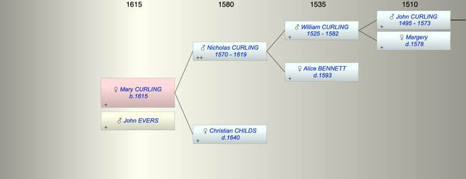

| [Index] |
| Mary CURLING (1615 - ) |
|  |
| b. 1615 at St Laurence |
| m. John EVERS |
| Parents: |
| Nicholas CURLING (1570 - 1619) |
| Christian CHILDS ( - 1640) |
| Siblings (3): |
| Joan CURLING (1607 - ) |
| Richard CURLING (1609 - ) |
| Susanna CURLING (1610 - ) |
| Events in Mary CURLING (1615 - )'s life | |||||
| Date | Age | Event | Place | Notes | Src |
| Married John EVERS | Not found | ||||
| 1615 | Mary CURLING was born | St Laurence | Note 1 | ||
| 1619 | 4 | Death of father Nicholas CURLING (aged 49) | St Laurence | buried 19 Apr 1619 ex FMP PR | |
| 1640 | 25 | Death of mother Christian CHILDS | St Peter, Thanet | Note 2 | |
| Note 1: bap at St Laurence 25 Apr 1615 ex FMP PR |
| Note 2: buried St Peters 16 Jun 1640 ex MW & MB |
| Created on a Mac™ using iFamily for Mac™ on 8 Oct 2023 |